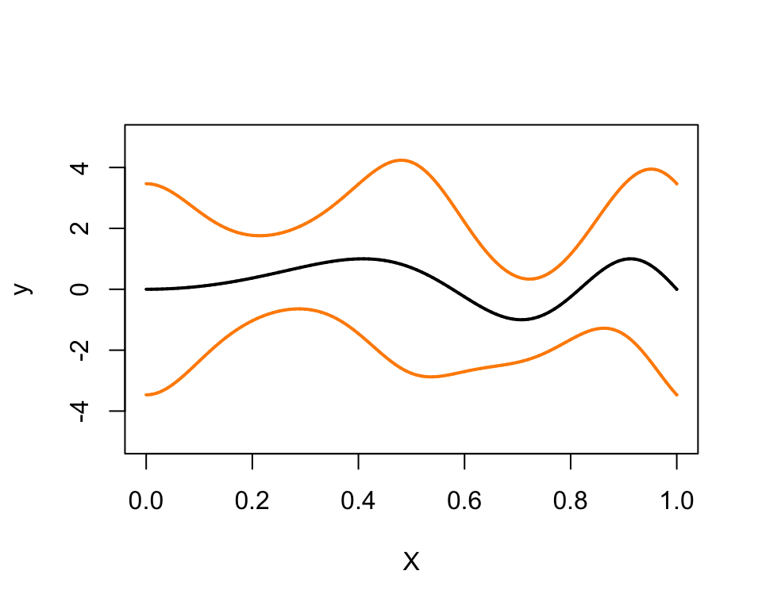

Last updated: 2018-11-09
workflowr checks: (Click a bullet for more information) ✔ R Markdown file: up-to-date
Great! Since the R Markdown file has been committed to the Git repository, you know the exact version of the code that produced these results.
✔ Environment: empty
Great job! The global environment was empty. Objects defined in the global environment can affect the analysis in your R Markdown file in unknown ways. For reproduciblity it’s best to always run the code in an empty environment.
✔ Seed:
set.seed(1)
The command set.seed(1) was run prior to running the code in the R Markdown file. Setting a seed ensures that any results that rely on randomness, e.g. subsampling or permutations, are reproducible.
✔ Session information: recorded
Great job! Recording the operating system, R version, and package versions is critical for reproducibility.
✔ Repository version: 684ee02
wflow_publish or wflow_git_commit). workflowr only checks the R Markdown file, but you know if there are other scripts or data files that it depends on. Below is the status of the Git repository when the results were generated:
Ignored files:
Ignored: analysis/figure/
Ignored: dsc/code/Wavelab850/MEXSource/CPAnalysis.mexmac
Ignored: dsc/code/Wavelab850/MEXSource/DownDyadHi.mexmac
Ignored: dsc/code/Wavelab850/MEXSource/DownDyadLo.mexmac
Ignored: dsc/code/Wavelab850/MEXSource/FAIPT.mexmac
Ignored: dsc/code/Wavelab850/MEXSource/FCPSynthesis.mexmac
Ignored: dsc/code/Wavelab850/MEXSource/FMIPT.mexmac
Ignored: dsc/code/Wavelab850/MEXSource/FWPSynthesis.mexmac
Ignored: dsc/code/Wavelab850/MEXSource/FWT2_PO.mexmac
Ignored: dsc/code/Wavelab850/MEXSource/FWT_PBS.mexmac
Ignored: dsc/code/Wavelab850/MEXSource/FWT_PO.mexmac
Ignored: dsc/code/Wavelab850/MEXSource/FWT_TI.mexmac
Ignored: dsc/code/Wavelab850/MEXSource/IAIPT.mexmac
Ignored: dsc/code/Wavelab850/MEXSource/IMIPT.mexmac
Ignored: dsc/code/Wavelab850/MEXSource/IWT2_PO.mexmac
Ignored: dsc/code/Wavelab850/MEXSource/IWT_PBS.mexmac
Ignored: dsc/code/Wavelab850/MEXSource/IWT_PO.mexmac
Ignored: dsc/code/Wavelab850/MEXSource/IWT_TI.mexmac
Ignored: dsc/code/Wavelab850/MEXSource/LMIRefineSeq.mexmac
Ignored: dsc/code/Wavelab850/MEXSource/MedRefineSeq.mexmac
Ignored: dsc/code/Wavelab850/MEXSource/UpDyadHi.mexmac
Ignored: dsc/code/Wavelab850/MEXSource/UpDyadLo.mexmac
Ignored: dsc/code/Wavelab850/MEXSource/WPAnalysis.mexmac
Ignored: dsc/code/Wavelab850/MEXSource/dct_ii.mexmac
Ignored: dsc/code/Wavelab850/MEXSource/dct_iii.mexmac
Ignored: dsc/code/Wavelab850/MEXSource/dct_iv.mexmac
Ignored: dsc/code/Wavelab850/MEXSource/dst_ii.mexmac
Ignored: dsc/code/Wavelab850/MEXSource/dst_iii.mexmac
Unstaged changes:
Deleted: code/mfvb.functions.R
| File | Version | Author | Date | Message |
|---|---|---|---|---|
| Rmd | 684ee02 | Peter Carbonetto | 2018-11-09 | wflow_publish(“gaussvarest.Rmd”) |
| html | 692edf4 | Peter Carbonetto | 2018-11-09 | Success in running full gaussvarest analysis with n=10 simulations. |
| Rmd | 4bca2be | Peter Carbonetto | 2018-11-09 | wflow_publish(“gaussvarest.Rmd”) |
| html | 593d682 | Peter Carbonetto | 2018-11-09 | More testing of gaussvarest analysis with n=10 simulations. |
| Rmd | 3bcc70b | Peter Carbonetto | 2018-11-09 | wflow_publish(“gaussvarest.Rmd”) |
| Rmd | e1ebc43 | Peter Carbonetto | 2018-11-09 | wflow_publish(“gaussvarest.Rmd”) |
| html | 613f9b2 | Peter Carbonetto | 2018-11-09 | First workflowr build of the gaussvarest analysis. |
| Rmd | 2c6154d | Peter Carbonetto | 2018-11-09 | wflow_publish(“gaussvarest.Rmd”) |
| Rmd | fb432d7 | Peter Carbonetto | 2018-11-09 | wflow_publish(“gaussvarest.Rmd”) |
| Rmd | 049dcbb | Peter Carbonetto | 2018-11-08 | Moved around some files and revised TOC in home page. |
This script implements the “Gaussian variance estimation” simulation experiments in the paper. In particular, we compare the Mean Field Variational Bayes (MFVB) method against SMASH in two scenarios. The figure and table generated at the end of this script should match up with the figure and table shown in the paper.
Running the code could take several hours to complete as it runs the two methods on 100 simulated data sets for each of the two scenarios.
We thank M. Menictas & M. Wand for generously sharing code that was used to implement these experiments.
To run this example on your own computer, please follow these setup instructions. These instructions assume you already have R and/or RStudio installed on your computer.
First, download or clone the git repository on your computer.
Launch R, and change the working directory to be the “analysis” folder inside your local copy of the git repository.
Finally, install the smashr package from GitHub:
devtools::install_github("stephenslab/smashr")See the “Session Info” at the bottom for the versions of the software and R packages that were used to generate the results shown below.
Load the smashr package, as well as some functions used in the analysis below.
library(smashr)
source("../code/mfvb.R")Specify the number of data sets simulated in the first and second simulation scenarios.
nsim1 <- 10
nsim2 <- 10Next, specify the hyperparameters used in running the MFVB method.
Au.hyp <- 1e5
Av.hyp <- 1e5
sigsq.gamma <- 1e10
sigsq.beta <- 1e10These variables specify some colours used in the plots.
mainCol <- "darkslateblue"
ptCol <- "paleturquoise3"
lineCol <- "skyblue"
axisCol <- "black"These are additional plotting parameters.
cex.pt <- 0.75
cex.mainVal <- 1.7
cex.labVal <- 1.3
xlabVal <- "x"Compare this plot against the one shown in Fig. 4 of the paper.
xgrid <- (0:10000)/10000
plot(xgrid,fTrue(xgrid),type = "l",ylim = c(-5,5),ylab = "y",xlab = "X",
lwd = 2)
lines(xgrid,fTrue(xgrid) + 2*sqrt(gTrue(xgrid)),col = "darkorange",lwd = 2)
lines(xgrid,fTrue(xgrid) - 2*sqrt(gTrue(xgrid)),col = "darkorange",lwd = 2)
| Version | Author | Date |
|---|---|---|
| 613f9b2 | Peter Carbonetto | 2018-11-09 |
In the first scenario, we simulate data sets with 500 unevenly spaced data points, and assess accuracy, separately for the mean and variance estimates) by computing the mean of the squared errors (MSE) evaluated at 201 equally spaced points.
mse.mu.uneven.mfvb <- 0
mse.mu.uneven.smash <- 0
mse.sd.uneven.mfvb <- 0
mse.sd.uneven.smash <- 0Run the SMASH and MFVB methods for each simulated data set.
cat(sprintf("Running %d simulations: ",nsim1))
for (j in 1:nsim1) {
cat(sprintf("%d ",j))
# SIMULATE DATA
set.seed(3*j)
n <- 500
xOrig <- runif(n)
set.seed(3*j)
yOrig <- fTrue(xOrig) + sqrt(exp(loggTrue(xOrig)))*rnorm(n)
aOrig <- min(xOrig)
bOrig <- max(xOrig)
mean.x <- mean(xOrig)
sd.x <- sd(xOrig)
mean.y <- mean(yOrig)
sd.y <- sd(yOrig)
a <- (aOrig - mean.x)/sd.x
b <- (bOrig - mean.x)/sd.x
x <- (xOrig - mean.x)/sd.x
y <- (yOrig - mean.y)/sd.y
numIntKnotsU <- 17
intKnotsU <- quantile(x,seq(0,1,length=numIntKnotsU+2)[-c(1,numIntKnotsU+2)])
Zu <- ZOSull(x,intKnots=intKnotsU,range.x=c(a,b))
numKnotsU <- ncol(Zu)
numIntKnotsV <- numIntKnotsU
intKnotsV <-
quantile(x,seq(0,1,length = numIntKnotsV + 2)[-c(1,numIntKnotsV+2)])
Zv <- ZOSull(x,intKnots=intKnotsV,range.x=c(a,b))
numKnotsV <- ncol(Zv)
# RUN MEAN FIELD VARIATIONAL BAYES
X <- cbind(rep(1,n),x)
Cumat <- cbind(X,Zu)
Cvmat <- cbind(X,Zv)
ncX <- ncol(X)
ncZu <- ncol(Zu)
ncZv <- ncol(Zv)
ncCu <- ncol(Cumat)
ncCv <- ncol(Cvmat)
MFVBfit <- meanVarMFVB(y,X,ncZu,ncZv,Au.hyp,Av.hyp,
sigsq.gamma,sigsq.beta)
ng <- 201
xgOrig <- seq(aOrig,bOrig,length=ng)
xg <- (xgOrig - mean.x)/sd.x
Xg <- cbind(rep(1,ng),xg)
Zug <- ZOSull(xg,intKnots=intKnotsU,range.x=c(a,b))
Cug <- cbind(Xg,Zug)
Zvg <- ZOSull(xg,intKnots=intKnotsV,range.x=c(a,b))
Cvg <- cbind(Xg,Zvg)
mu.q.nu <- MFVBfit$mu.q.nu
mu.q.omega <- MFVBfit$mu.q.omega
Sigma.q.nu <- MFVBfit$Sigma.q.nu
Sigma.q.omega <- MFVBfit$Sigma.q.omega
fhatMFVBg <- Cug%*%mu.q.nu
fhatMFVBgOrig <- fhatMFVBg*sd.y + mean.y
logghatMFVBg <- Cvg%*%mu.q.omega
logghatMFVBgOrig <- logghatMFVBg + 2*log(sd.y)
sdloggMFVBgOrig <- sqrt(diag(Cvg%*%Sigma.q.omega%*%t(Cvg)))
credLowloggMFVBgOrig <- logghatMFVBgOrig - qnorm(0.975)*sdloggMFVBgOrig
credUpploggMFVBgOrig <- logghatMFVBgOrig + qnorm(0.975)*sdloggMFVBgOrig
sqrtghatMFVBg <- exp(0.5*Cvg %*% mu.q.omega
+ 0.125*diag(Cvg%*%Sigma.q.omega%*%t(Cvg)))
sqrtghatMFVBgOrig <- sqrtghatMFVBg*sd.y
# RUN SMASH
x.mod <- unique(sort(xOrig))
y.mod <- 0
for(i in 1:length(x.mod))
y.mod[i] <- median(yOrig[xOrig == x.mod[i]])
y.exp <- c(y.mod,y.mod[length(y.mod):(2*length(y.mod)-2^9+1)])
y.final <- c(y.exp,y.exp[length(y.exp):1])
mu.est <- smash.gaus(y.final,filter.number=1,family="DaubExPhase")
var.est <- smash.gaus(y.final,v.est=TRUE)
mu.est <- mu.est[1:500]
var.est <- var.est[1:500]
mu.est.inter <- approx(x.mod,mu.est,xgOrig,'linear')$y
var.est.inter <- approx(x.mod,var.est,xgOrig,'linear')$y
mse.mu.uneven.mfvb[j]<-mean((fhatMFVBgOrig - fTrue(xgOrig))^2)
mse.sd.uneven.mfvb[j]<-mean((sqrtghatMFVBgOrig-exp((loggTrue(xgOrig))/2))^2)
mu.est <- smash.gaus(y.final,filter.number=8,family="DaubLeAsymm")
var.est <- smash.gaus(y.final,v.est=TRUE,v.basis=TRUE,filter.number=8,
family="DaubLeAsymm")
mu.est <- mu.est[1:500]
var.est <- var.est[1:500]
mu.est.inter <- approx(x.mod,mu.est,xgOrig,'linear')$y
var.est.inter <- approx(x.mod,var.est,xgOrig,'linear')$y
mse.mu.uneven.smash[j] <- mean((mu.est.inter-fTrue(xgOrig))^2)
mse.sd.uneven.smash[j] <-
mean((sqrt(var.est.inter)-exp((loggTrue(xgOrig))/2))^2)
}
# Running 10 simulations: 1 2 3 4 5 6 7 8 9 10In this scenario, we simulate data sets with 1,024 evenly spaced data points. We assess accuracy separately for the mean and standard deviation as the mean of the MSEs evaluated at each of the locations.
mse.mu.even.mfvb <- 0
mse.mu.even.smash <- 0
mse.sd.even.mfvb <- 0
mse.sd.even.smash <- 0Run the SMASH and MFVB methods for each simulated data set.
cat(sprintf("Running %d simulations: ",nsim2))
for (j in 1:nsim2) {
cat(sprintf("%d ",j))
# SIMULATE DATA
n <- 2^10
xOrig <- (1:n)/n
set.seed(30*j)
yOrig <- fTrue(xOrig) + sqrt(exp(loggTrue(xOrig)))*rnorm(n)
aOrig <- min(xOrig)
bOrig <- max(xOrig)
mean.x <- mean(xOrig)
sd.x <- sd(xOrig)
mean.y <- mean(yOrig)
sd.y <- sd(yOrig)
a <- (aOrig - mean.x)/sd.x
b <- (bOrig - mean.x)/sd.x
x <- (xOrig - mean.x)/sd.x
y <- (yOrig - mean.y)/sd.y
numIntKnotsU <- 17
intKnotsU <- quantile(x,seq(0,1,length=numIntKnotsU+2)[-c(1,numIntKnotsU+2)])
Zu <- ZOSull(x,intKnots=intKnotsU,range.x=c(a,b))
numKnotsU <- ncol(Zu)
numIntKnotsV <- numIntKnotsU
intKnotsV <- quantile(x,seq(0,1,length=numIntKnotsV+2)[-c(1,numIntKnotsV+2)])
Zv <- ZOSull(x,intKnots=intKnotsV,range.x=c(a,b))
numKnotsV <- ncol(Zv)
# RUN MEAN FIELD VARIATIONAL BAYES
X <- cbind(rep(1,n),x)
Cumat <- cbind(X,Zu)
Cvmat <- cbind(X,Zv)
ncX <- ncol(X)
ncZu <- ncol(Zu)
ncZv <- ncol(Zv)
ncCu <- ncol(Cumat)
ncCv <- ncol(Cvmat)
MFVBfit <- meanVarMFVB(y,X,ncZu,ncZv,Au.hyp,Av.hyp,
sigsq.gamma,sigsq.beta)
ng <- 2^10
xgOrig <- seq(aOrig,bOrig,length=ng)
xg <- (xgOrig - mean.x)/sd.x
Xg <- cbind(rep(1,ng),xg)
Zug <- ZOSull(xg,intKnots=intKnotsU,range.x=c(a,b))
Cug <- cbind(Xg,Zug)
Zvg <- ZOSull(xg,intKnots=intKnotsV,range.x=c(a,b))
Cvg <- cbind(Xg,Zvg)
mu.q.nu <- MFVBfit$mu.q.nu
mu.q.omega <- MFVBfit$mu.q.omega
Sigma.q.nu <- MFVBfit$Sigma.q.nu
Sigma.q.omega <- MFVBfit$Sigma.q.omega
# Get the mean function estimate.
fhatMFVBg <- Cug %*% mu.q.nu
fhatMFVBgOrig <- fhatMFVBg*sd.y + mean.y
logghatMFVBg <- Cvg%*%mu.q.omega
logghatMFVBgOrig <- logghatMFVBg + 2*log(sd.y)
sdloggMFVBgOrig <- sqrt(diag(Cvg%*%Sigma.q.omega%*%t(Cvg)))
credLowloggMFVBgOrig <- logghatMFVBgOrig - qnorm(0.975)*sdloggMFVBgOrig
credUpploggMFVBgOrig <- logghatMFVBgOrig + qnorm(0.975)*sdloggMFVBgOrig
sqrtghatMFVBg <- exp(0.5*Cvg%*%mu.q.omega
+ 0.125*diag(Cvg%*%Sigma.q.omega%*%t(Cvg)))
sqrtghatMFVBgOrig <- sqrtghatMFVBg*sd.y
# RUN SMASH
mu.est <- smash.gaus(yOrig,filter.number=1,family="DaubExPhase")
var.est <- smash.gaus(yOrig,v.est=TRUE)
mse.mu.even.mfvb[j] <- mean((fhatMFVBgOrig-fTrue(xgOrig))^2)
mse.sd.even.mfvb[j] <- mean((sqrtghatMFVBgOrig-exp((loggTrue(xgOrig))/2))^2)
mu.est <- smash.gaus(yOrig,filter.number=8,family="DaubLeAsymm")
var.est <- smash.gaus(yOrig,v.est=TRUE,v.basis=TRUE,filter.number=8,
family = "DaubLeAsymm")
mse.mu.even.smash[j] <- mean((mu.est - fTrue(xgOrig))^2)
mse.sd.even.smash[j] <- mean((sqrt(var.est)-exp((loggTrue(xgOrig))/2))^2)
}
# Running 10 simulations: 1 2 3 4 5 6 7 8 9 10The following two tables shows the mean squared error (MSE) averaged over the 100 simulations in each of the scenarios. Compare these results with Table 1 in the paper.
mse.table1 <- rbind(c(mean(mse.mu.uneven.mfvb),mean(mse.sd.uneven.mfvb)),
c(mean(mse.mu.uneven.smash),mean(mse.sd.uneven.smash)))
mse.table2 <- rbind(c(mean(mse.mu.even.mfvb),mean(mse.sd.even.mfvb)),
c(mean(mse.mu.even.smash),mean(mse.sd.even.smash)))
rownames(mse.table1) <- c("MFVB","SMASH")
colnames(mse.table1) <- c("mean","sd")
rownames(mse.table2) <- c("MFVB","SMASH")
colnames(mse.table2) <- c("mean","sd")
cat(sprintf("MSE averaged across %d simulations in Scenario 1:\n",nsim1))
print(mse.table1)
cat(sprintf("and averaged across %d simulations in Scenario 2:\n",nsim2))
print(mse.table2)
# MSE averaged across 10 simulations in Scenario 1:
# mean sd
# MFVB 0.03129997 0.02329073
# SMASH 0.03616205 0.01815929
# and averaged across 10 simulations in Scenario 2:
# mean sd
# MFVB 0.01608097 0.007067097
# SMASH 0.01468753 0.005463422In Scenario 1, the data are not equally spaced, and the number of data points is not a power of 2; in this setting, SMASH is more accurate in estimating both the mean and s.d.
In Scenario 2, the data are equally spaced, and the number of data points is a power of 2; SMASH again outperforms MFVB in both mean and s.d. estimation.
sessionInfo()
# R version 3.4.3 (2017-11-30)
# Platform: x86_64-apple-darwin15.6.0 (64-bit)
# Running under: macOS High Sierra 10.13.6
#
# Matrix products: default
# BLAS: /Library/Frameworks/R.framework/Versions/3.4/Resources/lib/libRblas.0.dylib
# LAPACK: /Library/Frameworks/R.framework/Versions/3.4/Resources/lib/libRlapack.dylib
#
# locale:
# [1] en_US.UTF-8/en_US.UTF-8/en_US.UTF-8/C/en_US.UTF-8/en_US.UTF-8
#
# attached base packages:
# [1] splines stats graphics grDevices utils datasets methods
# [8] base
#
# other attached packages:
# [1] smashr_1.2-0
#
# loaded via a namespace (and not attached):
# [1] Rcpp_0.12.19 compiler_3.4.3 git2r_0.23.0
# [4] workflowr_1.1.1 R.methodsS3_1.7.1 R.utils_2.6.0
# [7] bitops_1.0-6 iterators_1.0.9 tools_3.4.3
# [10] digest_0.6.17 evaluate_0.11 lattice_0.20-35
# [13] Matrix_1.2-12 foreach_1.4.4 yaml_2.2.0
# [16] parallel_3.4.3 stringr_1.3.1 knitr_1.20
# [19] caTools_1.17.1 REBayes_1.3 rprojroot_1.3-2
# [22] grid_3.4.3 data.table_1.11.4 rmarkdown_1.10
# [25] ashr_2.2-23 magrittr_1.5 whisker_0.3-2
# [28] backports_1.1.2 codetools_0.2-15 htmltools_0.3.6
# [31] MASS_7.3-48 assertthat_0.2.0 wavethresh_4.6.8
# [34] stringi_1.2.4 Rmosek_8.0.69 doParallel_1.0.11
# [37] pscl_1.5.2 truncnorm_1.0-8 SQUAREM_2017.10-1
# [40] R.oo_1.21.0This reproducible R Markdown analysis was created with workflowr 1.1.1